Brief description of each publication
13) GA-NIFS: An extremely nitrogen-loud and chemically stratified galaxy at z∼5.55, Ji et al. (2024)
Recent JWST observations revealed several galaxies with extreme nitrogen enhancements in the early Universe, whose enrichment mechanisms remain debated. In this work, we present the chemical abundance pattern of GS_3073, a galaxy at z=5.55 hosting an ``overmassive'' active black hole, by leveraging the detection of about 40 emission lines from JWST/NIRSpec IFU observations and ground-based (VLT/VIMOS) data. By using rest-frame UV emission lines, which trace high-density ($\sim 10^5~{\rm cm}^{-3}$) and highly ionized gas, we derive an abundance ratio of $\rm log(N/O) = 0.46^{+0.12}_{-0.09}$. At an estimated metallicity of $0.2~Z_{\odot}$, this is the most extreme nitrogen-rich galaxy found by JWST thus far. In comparison, the relative carbon abundance of GS_3073 is not significantly higher than those in local galaxies and stars with similar metallicities. We also find evidence of Fe enrichment in GS_3073. Overall, the chemical abundance pattern of GS_3073 is compatible with enrichment by super-massive stars, ejecta from asymptotic giant branch (AGB) stars, or winds from Wolf-Rayet (WR) stars. Interestingly, when using optical emission lines which trace low-density and low-ionization gas, we find a sub-solar N/O ratio, consistent with local galaxies at the same metallicity. We interpret the difference in N/O derived from UV lines and optical lines as evidence for a stratified system, where the inner and denser region is both more chemically enriched and more ionized. Taking this luminous, well-studied system as a benchmark, our results suggest that nitrogen enhancement in high-$z$ galaxies is confined to the central, dense, and highly ionized regions, while the bulk of the galaxy evolves more normally.
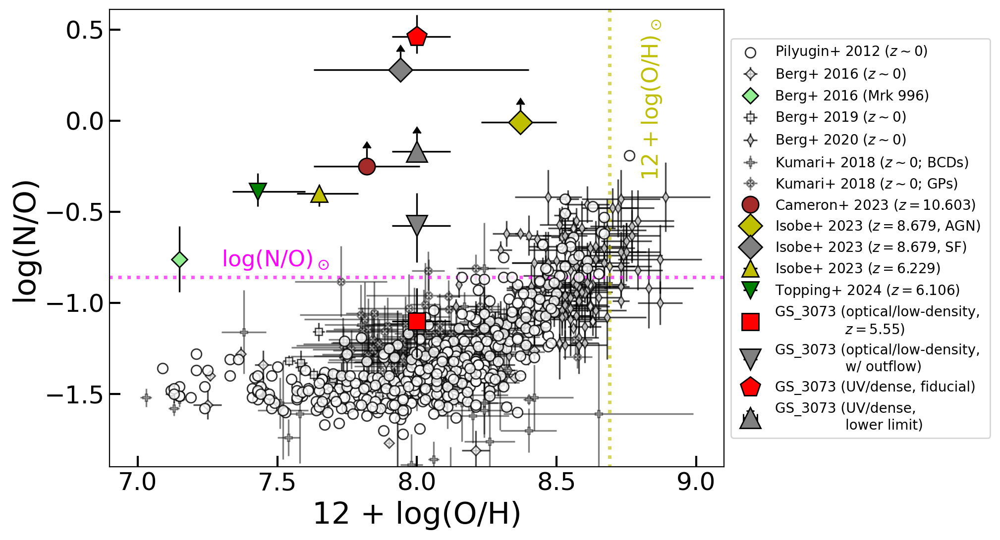
Relation between N/O and O/H measured from different systems. We used open symbols to represent all $z\sim 0$ sources except the nitrogen-loud galaxy Mrk 996. The colored symbols represent nitrogen-loud galaxies confirmed by JWST/NIRSpec observations. The red pentagon represents the fiducial abundances we estimated for GS_3073, where N/O is estimated from rest-frame UV emission lines originating in a high-density region. The red square corresponds to the fiducial abundances we estimated based on rest-frame optical emission lines, which likely originate in a low-density region. The significantly different N/O ratios of the high-density region and the low-density region indicate a strong chemical stratification in GS_3073.
12) GA-NIFS: NIRSpec reveals evidence for non-circular motions and AGN feedback in GN20, Übler et al. (2024b)
In this paper, we present rest-frame optical data of the 𝑧 ∼ 4 sub-millimeter galaxy GN2. The H𝛼 emission is asymmetric and clumpy and extends over a projected distance of more than 15 kpc. To first order, the large-scale ionised gas kinematics are consistent with a turbulent (𝜎 ∼ 90 km/s), rotating disc (𝑣rot ∼ 500 km/s), congruent with previous studies of its molecular and ionised gas kinematics. However, we also find clear evidence for non-circular motions in the H𝛼 kinematics. We discuss their possible connection with various scenarios, such as external perturbations, accretion or radial flows. In the centre of GN20, we find broad line emission (FWHM ∼ 1000−2000 km/s) in the H𝛼+[NII] complex, suggestive of fast, AGN-driven winds or, alternatively, of the broad-line region of an active black hole. Elevated values of [NII]𝜆6583/H𝛼 > 0.4 and EW(H𝛼) > 6 Å throughout large parts of GN20 suggest that feedback from the active black hole is able to photo-ionise the interstellar medium. Our data corroborates that GN20 offers a unique opportunity to observe key processes in the evolution of the most massive present-day galaxies acting in concert, over 12 billion years ago.
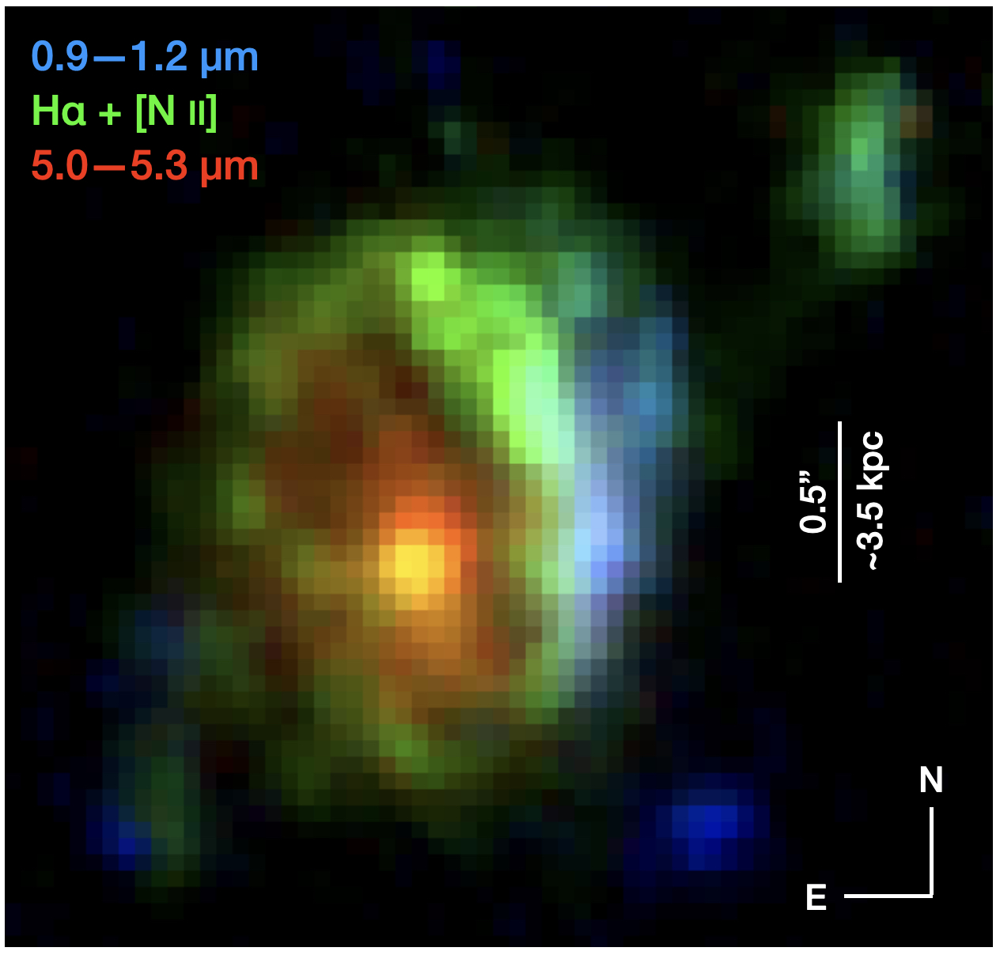
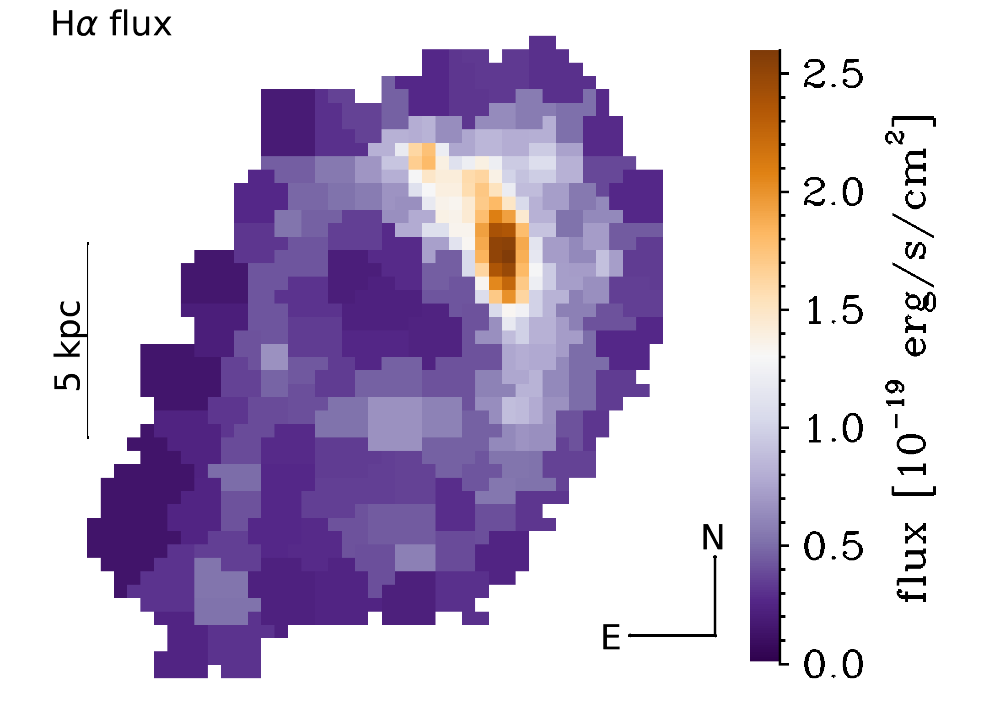
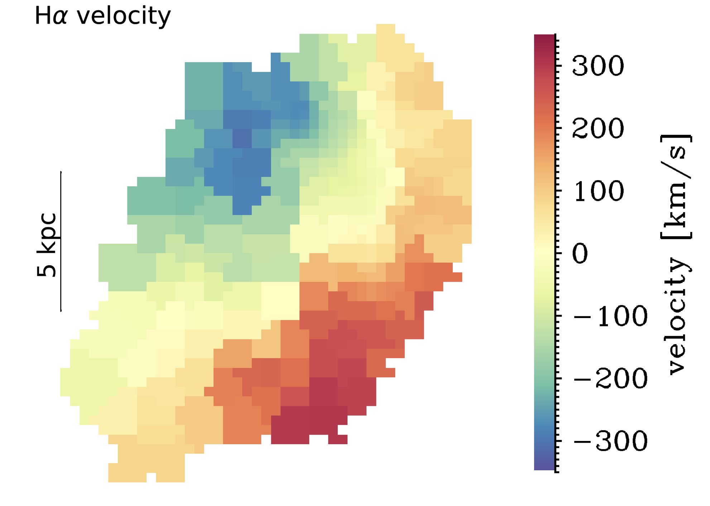
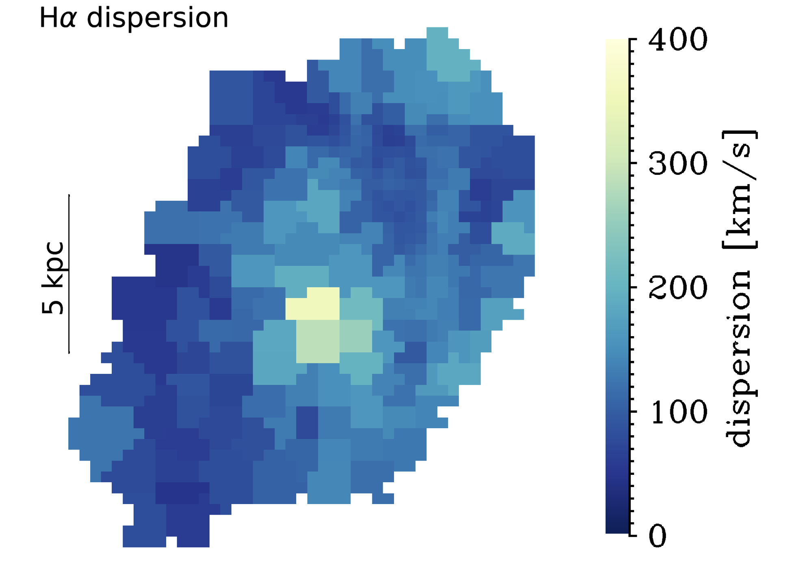
From left to right: Comparison of rest-frame optical (green), UV (blue), and near-infrared (red) emission in GN20; Voronoi-binned maps of the observed Hα flux, velocity, and velocity dispersion from a one-component fit. The Hα emission is complex and clumpy, yet the large-scale kinematics are consistent with a rotating disc. The high dispersion values in the central region in the right-most panel trace a nuclear broad flux component. Removing this component, we find high average values of 𝜎_obs ∼ 50 − 150 km/s throughout GN20. We also find evidence for non-circular motions in the velocity field through patterns that deviate from the classical spider diagram expected for rotating discs, which might trace an inflow through the disc towards the nuclear region.
11) GA-NIFS: The core of an extremely massive proto-cluster at the Epoch of Reionization probed with JWST/NIRSpec, Arribas et al. (2024)
These GA-NIFS observations reveal ten new galaxies at z~ 6.9 in the surroundings of SPT0311-58.
The implied large number density ($\phi$ ~ 10$^{4}\ $Mpc$^{-3}$) and the wide spread in velocities
confirm that SPT0311-58 is at the core of a protocluster immersed in a very massive dark-matter halo
of ~(5 $\pm$ 3) $\times$ 10$^{12}$ M$_{\odot}$sun, and therefore represents the most massive
protocluster ever found at the epoch of reionisation (EoR, see Figure below).
We also studied the dynamical stage of this protocluster core and find that it is likely not fully
virialised and that most of the galaxies are gravitationally bound to the dark matter halo.
The galaxies in the system exhibit a wide range of properties and evolutionary stages. Detailed
spatially resolved spectroscopy of the East galaxy reveals the early phases of stellar assembling
at very high-z, showing inhomogeneities in the ISM properties at subkiloparsec scales, deviations
from regular rotation, elevated turbulence, and a metallicity gradient that can be explained by
accretion of low metallicity gas from the intergalactic medium. We also find evidence of minor
mergers.
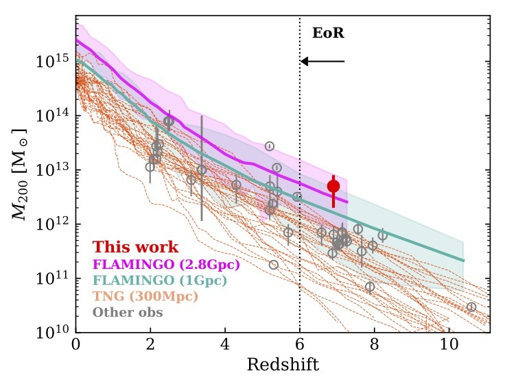
Halo mass (M$_{200}$) of SPT0311-58 (red dot) together with a compilation of protoclusters observed
at z $>$ 2 and simulations (Lim+2021,2024), as a function of redshift. The figure shows the
extreme mass of SPT0311-58, being the most massive protocluster discovered so far at EoR. It
also shows the difficulty of TNG simulations to predict a rare system like SPT0311-58, as a
consequence of their limited simulated volume. The position of SPT0311-58 can be reproduced
by FLAMINGO simulations with larger box sizes.
9) A fast-rotator post-starburst galaxy quenched by supermassive black-hole feedback at z=3, Francesco D'Eugenio et al. (2023) ADS link
There is compelling evidence that the most massive galaxies in the Universe stopped forming stars due to the
time-integrated feedback from their central super-massive black holes (SMBHs). However, the exact quenching mechanism
is not yet understood, because local massive galaxies were quenched billions
of years ago. We present JWST/NIRSpec integral-field spectroscopy observations of GS-10578,
a massive, quiescent galaxy at redshift $z = 3.064 \pm 0.002$.
From the spectrum we infer that the galaxy has a stellar mass of $M_\star = 1.6 \pm
0.2 \times 10^{11} \mathrm{M}_\odot$ and a dynamical mass $M_\mathrm{dyn} = 2.0 \pm 0.5 \times 10^{11}
\mathrm{M}_\odot$ . Half of
its stellar mass formed at $z = 3.7–4.6$, and the system is now quiescent, with
an upper limit on the current star-formation rate $SFR < 19 \mathrm{M_\odot \, yr^{-1}}$. We detect
ionised- and neutral-gas outflows traced by $\mathrm{[O\,\scriptsize{iii}]}$ emission and
$\mathrm{Na\,\scriptsize{I}}$ absorption. Outflow velocities reach
$v_\mathrm{out} \approx 1,000 \mathrm{km\, s^{-1}}$, comparable to the galaxy
escape velocity. GS-10578 hosts an Active Galactic Nucleus (AGN), evidence
that these outflows are due to SMBH feedback. The outflow rates are 0.14–2.9
and 30–100 $\mathrm{M_\odot\,yr^{−1}}$ for the ionised and neutral phases, respectively.
The neutral outflow rate is higher than the SFR, hence this is direct evidence for ejective
SMBH feedback, with mass-loading capable of interrupting star formation by
rapidly removing its fuel. Stellar kinematics show ordered rotation, with spin
parameter $\lambda_{R_\mathrm{e}} = 0.62\pm0.07$, meaning GS-10578 is rotation supported. This study
shows direct evidence for ejective AGN feedback in a massive, recently quenched
galaxy, thus helping to clarify how SMBHs quench their hosts. The high value
of $\lambda_{R_\mathrm{e}}$ implies that quenching can occur without destroying the stellar disc.
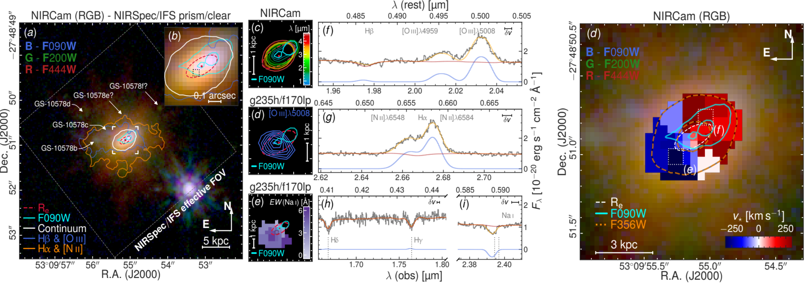
8) GA-NIFS: JWST discovers an offset AGN 740 million years after the big bang, Übler et al. (2024)
A surprising finding of recent studies is the large number of Active Galactic Nuclei (AGN) associated with moderately massive black holes ( log(M•/M⊙) ∼ 6 − 8), in the first billion years after the big bang (z > 5). In this context, a relevant finding has been the large fraction of candidate dual AGN, both at large separations (several kpc) and in close pairs (less than a kpc), likely in the process of merging. Frequent black hole merging may be a route for black hole growth in the early universe; however,previous findings are still tentative and indirect. We present JWST/NIRSpec-IFU observations of the galaxy system ZS7 at z = 7.15 in which we find evidence for a log(M•/M⊙) ∼ 7.7 accreting black hole, as traced by a broad component of Hβ emission, associated with the Broad Line Region (BLR) around the black hole. This BLR is offset by 620 pc in projection from the centroid of strong rest-frame optical emission, with a velocity offset of ∼40 km/s. The latter region is also characterized by (narrow) nebular emission features typical of AGN, hence also likely hosting another accreting black hole, although obscured. We exclude that the offset BLR is associated with Supernovae or massive stars, and we interpret these results as two black holes in the process of merging. This finding may be relevant for estimates of the rate and properties of gravitational-wave signals from the early universe that will be detected by future observatories like LISA.
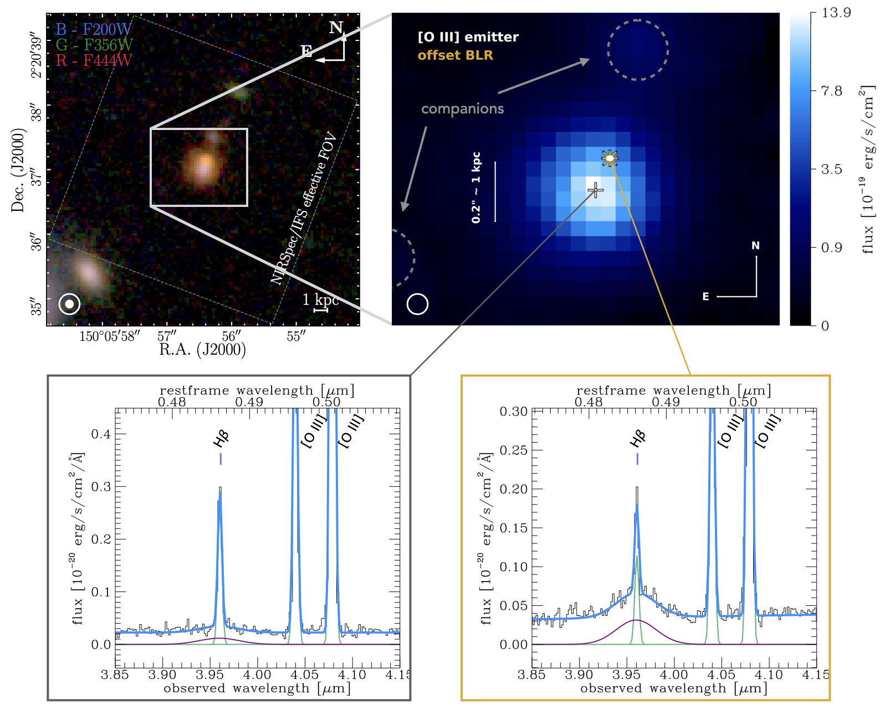
Top left: Colour-composite image of ZS7 and its immediate environment created using public NIRCam data from the PRIMER programme (PI: James Dunlop). The approximate NIRCam PSF is indicated by the white filled (F200W, ∼0.06") and open (F444W, ∼0.14") circles. The effective NIRSpec-IFU field of view (FOV) is indicated by the dashed white box. Top right: Zoom-in on the environment of ZS7. The colour scale shows a line map of [O III]λ5007, where we indicate the positions of two faint companions at the same redshift with dashed grey circles. The centroids of the [O III]λ5007 emission and the BLR emission are indicated by a white plus and a golden star. The approximate NIRSpec PSF at 4 μm is indicated by the white circle. The centroid of the [O III]λ5007 emission coincides with the NIRCam F200W emission, while the BLR location coincides with the F444W emission, reflected in the colour gradient in the NIRCam false-colour image.
Bottom: Zoom-in on the spectra extracted from a single spaxel at the [O III]λ5007 centroid position (left) and at the BLR location (right). We show our full fit in blue, with narrow emission lines in green and the BLR component in purple. At the BLR location, the broad Hβ emission is evident, while the [O III]λλ4959,5007 emission is narrow at all locations.
7) GA-NIFS: co-evolution within a highly star-forming galaxy group at z=3.7 witnessed by JWST/NIRSpec IFS, Rodríguez Del Pino et al. (2023)
GS4891 is a massive, highly star-forming galaxy part of a system of at least three galaxies at z~3.7,
together with a system at the north GS4891_n and GS28356. NIRSpec/IFS observations have revealed internal
substructure in GS4891 in the form of star-forming clumps (C1 and C2) as well as a complex interplay of
interactions and internal feedback within the group. Analyses of the rest-frame optical emission lines
have shown a clear gradient of more than 0.2 dex in the gas metallicity from the south to the north-west
of the most-massive system (GS4891), suggesting ongoing accretion of low-metallicity gas from the inter-galactic
medium that would be contributing to the mass-assembly of the system. The even higher gas metallicity in the
lower-mass companion at the north (GS4891_n) also suggests that the accretion of low-metallicity gas is favored
in the most-massive system, a scenario that would lead to a different evolution in the metallicity of satellites
and centrals at high redshift. The gas kinematics of the most-massive galaxy are consistent with rotation in a
dark-matter dominated system. Moreover, this galaxy is host to a metal-enriched, nuclear ionized outflow that
reaches up to ~1.2 kpc and could be contributing to the observed metallicity gradient.
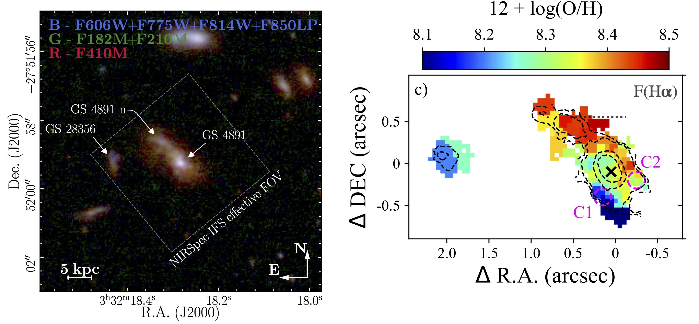
5) GA-NIFS: JWST/NIRSpec IFU observations of HFLS3 reveal a dense galaxy group at z∼6.3, Jones et al. (2024)
Massive, starbursting galaxies in the early Universe represent some of the most extreme objects in the study of galaxy evolution. One such source is HFLS3 (z∼6.34), which was originally identified as an extreme starburst galaxy with mild gravitational magnification (μ∼2.2). Here, we present
new observations of HFLS3 with the JWST/NIRSpec IFU in both low (PRISM/CLEAR; R∼100) and high spectral resolution (G395H/290LP;
R∼2700), with high spatial resolution (∼ 0.1") and sensitivity. Thanks to the combination of the NIRSpec data and a new lensing model with
accurate spectroscopic redshifts, we find that the 3"×3" field is crowded, with a lensed arc (C, z=6.3425±0.0002), two galaxies to the south (S1
and S2, z=6.3592±0.0001), two galaxies to the west (W1, z=6.3550±0.0001; W2, z=6.3628±0.0001), and two low-redshift interlopers (G1,
z=3.4806±0.0001; G2, z=2.00±0.01). We present spectral fits and morpho-kinematic maps for each bright emission line (e.g., [OIII]λ5007,
Hα, [NII]λ6584) from the R2700 data for all sources except G2 (whose spectral lines fall outside the observed wavelengths of the R2700 data).
From a line ratio analysis, the galaxies in component C are likely powered by star formation, while we cannot rule out or confirm the presence
of AGN in the other high-redshift sources. We perform gravitational lens modelling, finding evidence for a two-source composition of the lensed
central object and a comparable magnification factor (μ=2.1-2.4) to previous work. The projected distances and velocity offsets of each galaxy
suggest that they will merge within the next∼1 Gyr. Finally, we examine the dust extinction-corrected SFRHα of each z > 6 source, finding
that the total star formation (460±90M⊙ yr−1, magnification-corrected but not accounting for AGN contamination) is distributed across the six
z∼6.34-6.36 objects over a region of diameter∼11 kpc. Altogether, this suggests that HFLS3 is not a single starburst galaxy, but instead is a
merging system of star-forming galaxies in the Epoch of Reionization.
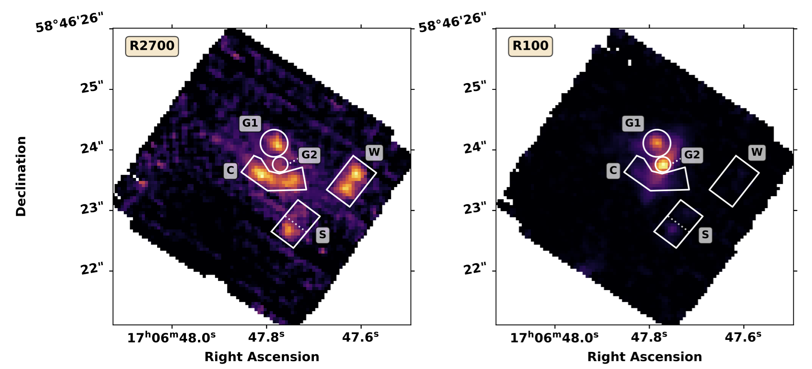
Integrated emission of the HFLS3 field, using two illustrative wavelength
ranges: redshifted Hα for z ∼ 6.34 for the
R2700 cube (λobs = 4.79954 − 4.84467 μm, left panel) and
the approximate wavelength range of HST/WFC3 F160W for
the R100 cube (λobs = 1.4 − 1.6 μm; right panel). The adopted
source masks are shown with white boundaries. North is up and
east is to the left.
3) GA-NIFS: Black hole and host galaxy properties of two z ≃ 6.8 quasars from the NIRSpec IFU, Marshall et al. (2023)
In our GA-NIFS program, we have observed a sample of six quasars at z > 6. In this paper we present our results from
the first two quasars observed, DELS J0411–0907 at z = 6.82 and VDES J0020–3653 at z = 6.86. By observing the Hβ,
[OIII]λλ4959, 5007, and Hα emission lines in these high-z quasars for the first time, we measured accurate black hole masses,
MBH = 1.85×10$^9$ $M_{\odot}$ and 2.9x10$^9$ $M_{\odot}$, corresponding to Eddington ratios of 0.8 and 0.4 for
DELS J0411–0907 and VDES J0020–3653, respectively. These provide a key comparison for existing estimates from the more
uncertain MgII line.
We performed quasar–host decomposition using models of the quasars’ broad lines to study the underlying host galaxies,
measuring their star formation rates, excitation mechanisms, and dynamical masses. DELS J0411–0907 and VDES J0020–3653
both lie above the local black hole–host mass relation, and are consistent with the existing observations of z~6 quasar
host galaxies with ALMA. We also discovered that these quasars are undergoing galaxy-galaxy mergers, with multiple companion
galaxies surrounding each of the quasars. We detected ionised outflows in [OIII] and Hβ from both quasars, with mass
outflow rates much larger than their host star formation rates. This work highlights the exceptional capabilities of
the JWST NIRSpec IFU for observing quasars in the early Universe.
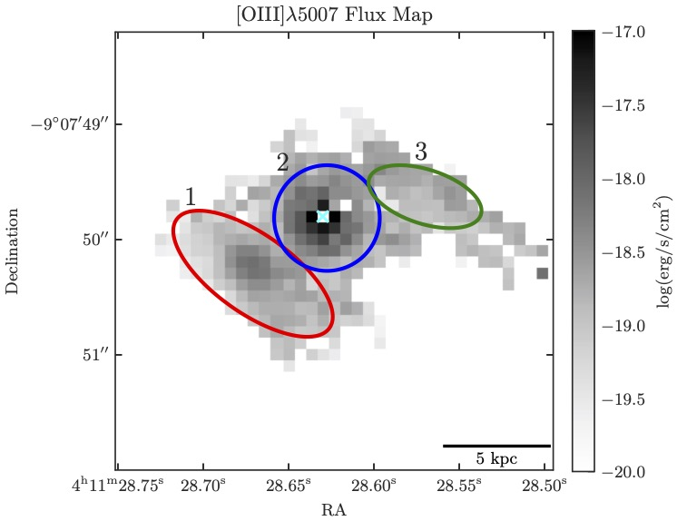
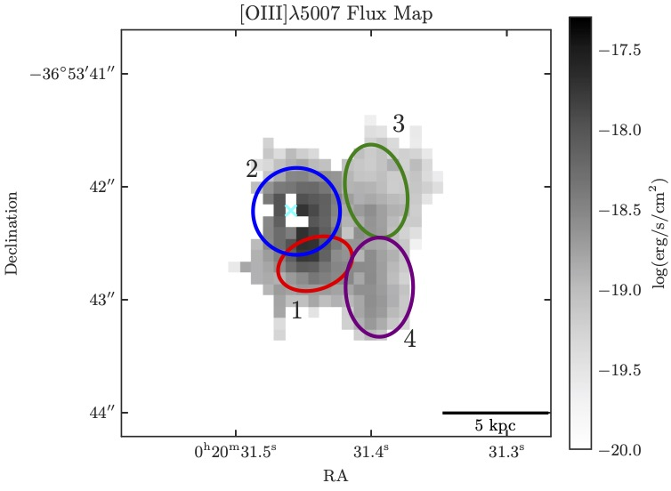
The extended [OIII] emission surrounding DELS J0411–0907 and VDES J0020–3653. The quasars are located at the blue cross, with their hosts the blue circle. Merging companion galaxies are the other ellipses.
2) GA-NIFS: A massive black hole in a low-metallicity AGN at z ∼ 5.55 revealed by JWST/NIRSpec IFS, Übler et al. (2023)
In this paper, we present rest-frame optical data of the compact z = 5.55 galaxy GS_3073. The galaxy's prominent
broad components in several hydrogen and helium lines and a detection of a large equivalent width of He IIλ4686,
EW(He II) ∼20 Å, unambiguously identify it as an active galactic nucleus (AGN). We measure a gas phase metallicity
of Zgas/Z⊙∼0.21, which is lower than what has been inferred for both more luminous AGN at a similar redshift and
lower redshift AGN. We empirically show that classical emission line ratio diagnostic diagrams cannot be used to
distinguish between the primary ionisation source -AGN or star formation- for systems with such low metallicity,
though different diagnostic diagrams involving He IIλ4686 prove useful, independent of metallicity. We measure the
central black hole mass to be log(MBH/M⊙)∼8.2 ± 0.4 based on the luminosity and width of the broad line region of
the Hα emission. While this places GS_3073 at the lower end of known high-redshift black hole masses, it still
appears to be overly massive when compared to its host galaxy's mass properties. We detected an outflow with a
projected velocity ≳700 km/s and inferred an ionised gas mass outflow rate of about 100 M⊙/yr, suggesting that
one billion years after the Big Bang, GS_3073 is able to enrich the intergalactic medium with metals.
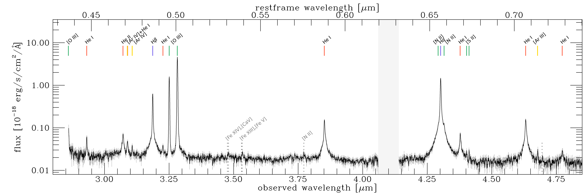
The integrated spectrum from the central 0.3”x0.3” shows a prominent broad-line region (BLR) in the permitted
hydrogen and helium lines, while the forbidden lines are narrow, with a faint red-shifted broader component.
Several high-ionisation lines are detected, such as He II and [Ar IV]. Tentative line detections of coronal
and auroral emission lines are indicated by dotted lines.